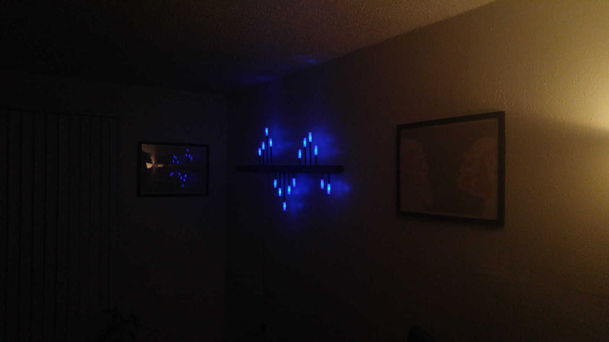

Lichtquanta: Arduino Powered "Light Sculpture"
I thought it would be fun to do something with LEDs and Arduino. The concept I had in mind for awhile was some sort of light sculpture that could decorate a room. Buying a shelf from IKEA inspired me to go ahead and make something.

Tubes are installed into the shelf in a wave pattern. The LEDs on top of the tubes are encased with glass "bulbs" (little glass jars covered with paper). A ribbon cable behind the shelf wires the lights to the Arduino. Pressing the Arudino's button changes between different lighting states. Its name "Lichtquanta" (German for "quanta of light") comes from Albert Einstein, who used it to describe photons.
Code and more details on GitHub.

Quick ideas for improvements: specialized LED hardware, encase hardware, RGB LEDs, dimming and flickering effects, glass tubes that light up entirely (instead of just bulb at top), wire bundles/cables, get rid of cheap shelf entirely.